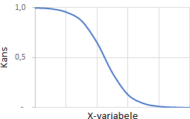
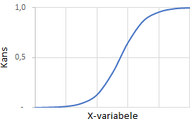

Logistische regressie is net als bij lineaire regressie een methode om een verband tussen een afhankelijke variabele en een of meer onafhankelijke varabelen te modelleren.
Bij lineaire regressie is de afhankelijke variabele kwantitatief, interval/ratio geschaald. Bij logistische regressie is de afhankelijke variabele kwalitatief, een categorie dus. Wanneer deze variabele maar twee uitkomsten heeft, dan is het een binaire of dichotome variabele.
Het voorspellen van de waarde voor een kwalitatieve variabele kan worden aangeduid als classificeren, het indelen in een categorie of klasse. Aan de andere kant proberen de methodes die vaak voor classificatie gebruikt worden eerst de kansen voor elke mogelijke categoriewaarde te voorspellen, als basis voor het maken van de classificatie.
Het logistische model gaat uit van kansen, of beter gezegd van kansverhoudingen: odds. Dit is de kans op de ene uitkomst gedeeld door de kans op de andere uitkomst. Een odds heeft een bereik van 0 tot oneindig.
Opmerking
Synoniemen voor logistische regressie zijn binaire logistische regressie, binomiale logistische regressie, logit model.
7.2 Logistisch model
In Figuur 7.1 (a) zie je het verband tussen het aantal minuten dat je aan huiswerk wiskunde besteed hebt en de slaagkans voor de wiskundetoets.
De kans om voor de wiskunde toets te slagen is aanvankelijk nogal laag, die zit heel dicht bij nul. Dus als je heel weinig tijd aan je huiswerk besteed dan slaag je niet voor deze wiskundetoets. Die slaagkans gaat bij ca. 30 min. huiswerk stijgen en vanaf 40 min zie je de slaagkans vrij lineair en snel omhoog gaan totdat je ongeveer bij 70 min. bent en dan is de kans dat je die wiskundetoets haalt bijna gelijk aan 100%. Dit is de beroemde S-curve vanwege de vorm.
(a) Slaagkans Wiskunde - huiswerktijd
(b) Slaagkans Wiskunde - huiswerktijd met lineaire trendlijn
Figuur 7.1: Verband tussen het aantal minuten dat je aan huiswerk wiskunde besteed hebt en de slaagkans voor de wiskundetoets.
Dat je het verband tussen slaagkans en huiswerk niet kunt modelleren met gewone lineaire regressie is te zien in Figuur 7.1 (b), waar een lineaire trendlijn is aangebracht. Hierin zijn een aantal opmerkelijke zaken te zien:
Wanneer je geen huiswerk maakt (huiswerk = 0), dan is er een negatieve kans. Dit kan natuurlijk niet.
De kans om de wiskundetoets te halen kan groter dan 1 zijn. Dit kan evenmin.
In de eerste helft van de grafiek geeft de trendlijn een overschatting van de kans.
In de tweede helft van de grafiek geeft de trendlijn een onderschatting van de kans.
De trendlijn heeft een intercept van -0,229 (negatief!) en een richtingscoefficient (rc) van 0,014
Deze regressielijn past niet bij de werkelijke observaties. Dus de gewone lineaire regressie is niet geschikt om dit soort kansen te modelleren.
Bij de logistische regressie wordt een speciale kanscurve gebruikt, waarbij de geschatte kans nooit onder de nul komt en ook nooit groter dan 1 wordt. Dat maakt deze kanscurve zeer geschikt om variabelen te analyseren die alleen 0 en 1 kennen als waarde. Bij een toets zou dit kunnen zijn:
0 = toets niet gehaald
1 = toets wel gehaald
De uitkomst van een logistische regressie is niet direct de categoriewaarde (hier 0 of 1), maar de kans op een bepaalde categoriewaarde. Deze kans ligt tussen 0 en 1. Het is aan de onderzoeker om op basis van die kans aan te geven in welke categorie de waarneming valt, dus wat het omkeerpunt van de kans voor categorie 0 of categorie 1 is. Standaard ligt het omslagpunt bij een kans van 50%.
Het logistische model gaat uit van kansverhoudingen: odds
In het voorbeeld is \(\text{odds} = \frac{p_{wel}} {p_{niet}} = \frac{p_{wel}} {1 - p_{wel}}\)
\(p_{wel}\) heeft een bereik van \([0, 1]\) waardoor de odds een bereik heeft van \([0, \infty]\).
Omdat het niet handig is te werken met een variabele die naar oneindig loopt, wordt de natuurlijke logaritme van de odds genomen. Deze wordt de log odds of logit genoemd.
Wanneer de onafhankelijke variabelen \(X_1, X_2, X_3, ...\) zijn, dan heeft het logistische model de volgende vorm:
Dit lijkt veel op een gewoon regressiemodel: \(b_0\) is het intercept en \(b_1, b_2, ...\) zijn de parameters die het effect van \(X_1, X_2, ...\) aangeven.
De kansen \(p_{wel}\) en \(p_{niet}\) zijn dus afhankelijk van de variabelen \(X_1, X_2, ...\), maar deze afhankelijkheid is niet lineair. De regressielijn heeft de vorm van een S-curve.

Negatief effect X

Positief effect X
Figuur 7.2: S-curves voor positieve en negatieve effecten.
7.2.1 Odds Ratio
De odds ratio is de verhouding tussen twee odds.
Voorbeeld. In een mand zitten 4 rode ballen en 1 groene bal. Je haalt nu 1 bal uit de mand.
De odds ratio voor het trekken van een rode bal vergeleken met een groene bal is \(Odds_{rood} / Odds_{groen} = 4 / 0,25 =16\).
Dus de odds voor het trekken van een rode bal is 16 keer groter dan de odds voor het trekken van een groen bal.
Onderzoekers gebruiken odds ratio’s in verschillende situaties wanneer ze de kansen willen analyseren van twee gebeurtenissen die kunnen plaatsvinden.
Een veelvoorkomend voorbeeld is het bepalen of een nieuwe behandeling de kansen van een patiënt op een goed resultaat vergroot in vergelijking met een bestaande behandeling.
Tabel 7.1 geeft het aantal patiënten weer dat een gunstig of slecht gezondheidsresultaat had als gevolg van hun medicijn.
Tabel 7.1: Resultaten medicijnbehandeling
Behandeling
Positief resultaat
Negatief resultaat
Nieuw medicijn
60
40
Bestaande behandeling
42
58
Voor patienten die met het nieuwe medicijn behandeld zijn is \(Odds_{positief} = 0,60/0,40 = 1,5\)
Voor patienten die met de bestaande behandeling is \(Odds_{positief} = 0,42/0,58 = 0,7241379\)
Odds ratio voor nieuw medicijn: \(Odds Ratio = 1,5 / 0,7241379 = 2.071429\)
Dus de odds op een positief resultaat met het nieuwe medicijn is 2 keer groter dan voor de bestaande behandeling.
7.3 Voorbeeld wiskundetoets
Bronnen Manfred te Grotenhuis (Radboud Universiteit):
Als databestand wordt het SPSS bestand wiskunde.sav gebruikt, beschikbaar gesteld door Manfred te Grotenhuis. Dit zijn echte data, afkomstig uit de V.S.
# Lees data in en converteer value labels naar factorslibrary(haven)wiskunde <-read_sav("data/wiskunde.sav") %>%as_factor(only_labelled =TRUE)# Inspectie van de datastr(wiskunde)
Dit getal geeft in feite het effect aan van het geslacht op het halen van de wiskundetoets. Als de oddsratio = 1 dan betekent dit dat zowel onder mannen als vrouwen de verhouding voldoende/onvoldoende gelijk is. Hier is de ratio kleiner dan 1, wat betekent dat onder de vrouwen minder voldoendes zijn dan onder de mannen. Met één getal, de odds ratio, kun je dus aangeven wat het effect is van het geslacht op het halen van de wiskundetoets.
De logistische regressie-analyse kun je uitdrukken in termen van odds, maar ook in termen van logitparameters. Het enige wat je hoeft te doen is de natuurlijke logaritme te berekenen van de odds en de oddsratio.
mannen: ln(0,727) = -0,319
vrouwen: ln(0,616) = -0,485
ln(0,847) = -0,166
Samengevat
mannen: odds = 0,727 en Logitparameter = -0,319
vrouwen odds = 0,616 en Logitparameter = -0,485
oddsratio (vrouwen/mannen) = 0,847 en Logitparameter = -0,166
Merk op dat de drie logitparameters negatief zijn.
Een deel van de getallen zie je terug bij de logistische regressie-analyse met R.
logitmodel <-glm(voldoende ~ sexe, data = wiskunde, family ="binomial")summary(logitmodel)
Call:
glm(formula = voldoende ~ sexe, family = "binomial", data = wiskunde)
Deviance Residuals:
Min 1Q Median 3Q Max
-1.05 -1.05 -0.98 1.32 1.39
Coefficients:
Estimate Std. Error z value Pr(>|z|)
(Intercept) -0.3192 0.0307 -10.41 < 2e-16 ***
sexevrouw -0.1657 0.0435 -3.81 0.00014 ***
---
Signif. codes: 0 '***' 0.001 '**' 0.01 '*' 0.05 '.' 0.1 ' ' 1
(Dispersion parameter for binomial family taken to be 1)
Null deviance: 11896 on 8833 degrees of freedom
Residual deviance: 11881 on 8832 degrees of freedom
AIC: 11885
Number of Fisher Scoring iterations: 4
Kolom “Estimate” is de kolom met de logitparameters.
Je kunt deze coéfficienten ook uit de list halen met de functie coef().
coef(logitmodel)
(Intercept) sexevrouw
-0.319 -0.166
En door hiervan de e-machten te nemen krijg je de odds.
exp(coef(logitmodel))
(Intercept) sexevrouw
0.727 0.847
Dat in de regel met de intercept de odds voor mannen staat en niet die voor vrouwen komt omdat de mannen gecodeerd zijn met de waarde 0. Net als bij gewone regressie is de intercept bepaald voor x=0. De regel voor intercept heeft daarom betrekking op mannen.
0,847 is het effect van de variabele geslacht en dit effect is significant. In die zin dat mannen de toets iets gemakkelijker halen dan de vrouwen.
Als je de codes van mannen en vrouwen omdraait, dus vrouwen met 0 codeert en mannen met 1, dan
mannen: odds = 0,727 en Logitparameter = -0,319
vrouwen odds = 0,616 en Logitparameter = -0,485
Bij mannen zijn er naar verhouding MEER voldoendes dan onvoldoendes dan bij vrouwen: 0,727/0,616=1,18 (=odds ratio) 0,166
Samenvattend
Een odds geeft de verhouding aan tussen wel (p1) en niet (p0):
als 1 dan zijn er evenveel wel als niet
als <1 dan meer niet als wel
als >1 dan meer wel als niet
Een odds ratio geeft de verhouding aan tussen twee odds en drukt een effect uit:
als 1 dan geen verband: de verhouding wel/niet is overal gelijk
een odds ratio ligt tussen oneindig klein (kans op wel neemt af)
en oneindig groot (kans op wel neemt toe)
Een logitparameter geeft ook een effect weer:
is het 0 dan geen effect
is het negatief dan neemt de kans op wel af
is het positief dan neemt de kans op wel toe
Met logistische regressie kun je dus een binaire (dichotome) uitkomstvariabele relateren aan één of meerdere voorspelvariabelen. Er wordt gewerkt met kansverhoudingen. Niet de waarde van de afhankelijke variabele wordt gemodelleerd, maar de kans op die uitkomst.
7.4 Voorbeeld onderwijs
Dit is een aardig voorbeeld van logistische regressie m.b.t. het onderwijs. Het voorbeeld wordt zowel uitgewerkt in R als in Excel.
In R behoort logistische regressie tot de familie Generalized Linear Model (GLM).
Voor drie variabelen wordt bekeken of ze van invloed zijn om vanuit een bacheloropleiding toegelaten te worden tot de masteropleiding. Deze onafhankelijke voorspellende variabelen zijn:
gre (Graduate Record Examination score), een gestandaardiseerde test in de V.S, welke voor de meeste masteropleidingen een vereiste is. 130 is de laagst mogelijke score en 170 de hoogste per sectie. Er zijn twee onderdelen (algemeen en vakspecifiek), dus gecombineerd loopt de score van 260 tot 340.
gpa (Grade Point Average), een standaardmethode in de VS om te meten hoe succesvol de studie verlopen is. De score is een waarde uit het interval 0 t/m 4 punten waarbij 4 het beste is.
rank (prestige van de bacheloropleiding), een gehele waarde uit het interval 1 (hoogste prestige) tot 4 (laagste prestige)
Het al dan niet toegelaten worden tot de masteropleiding wordt bijgehouden in de afhankelijke variabele (respons variabele):
admit, binair met waarden 0 (niet toegelaten) of 1 (toegelaten).
De variabelen gre, gpa worden als continue variabelen behandeld. En variabele rank kan alleen maar de gehele waarden 1 t/m 4 aannemen. Omdat rank als een categorievariabele behandeld moet worden moet deze eerst omgezet worden naar het type factor.
|Voor vergelijking met de uitvoer in Excel kun je dat laatste misschien beter achterwege laten.
# conversie variabele rank naar type factorschooldata$rank <-factor(schooldata$rank)# Statistische samenvatting van de variabelensummary(schooldata)
admit gre gpa rank
Min. :0.000 Min. :220 Min. :2.26 1: 61
1st Qu.:0.000 1st Qu.:520 1st Qu.:3.13 2:151
Median :0.000 Median :580 Median :3.40 3:121
Mean :0.318 Mean :588 Mean :3.39 4: 67
3rd Qu.:1.000 3rd Qu.:660 3rd Qu.:3.67
Max. :1.000 Max. :800 Max. :4.00
skimr::skim(schooldata) # geeft ook standaarddeviatie en aantal NA's
Data summary
Name
schooldata
Number of rows
400
Number of columns
4
_______________________
Column type frequency:
factor
1
numeric
3
________________________
Group variables
None
Variable type: factor
skim_variable
n_missing
complete_rate
ordered
n_unique
top_counts
rank
0
1
FALSE
4
2: 151, 3: 121, 4: 67, 1: 61
Variable type: numeric
skim_variable
n_missing
complete_rate
mean
sd
p0
p25
p50
p75
p100
hist
admit
0
1
0.32
0.47
0.00
0.00
0.0
1.00
1
▇▁▁▁▃
gre
0
1
587.70
115.52
220.00
520.00
580.0
660.00
800
▁▂▇▇▅
gpa
0
1
3.39
0.38
2.26
3.13
3.4
3.67
4
▁▃▆▇▆
Maak een logistic regressiemodel met de functie glm() (generalized linear model).
logitmodel <-glm(admit ~ gre + gpa + rank, data = schooldata, family ="binomial")summary(logitmodel)
Call:
glm(formula = admit ~ gre + gpa + rank, family = "binomial",
data = schooldata)
Deviance Residuals:
Min 1Q Median 3Q Max
-1.627 -0.866 -0.639 1.149 2.079
Coefficients:
Estimate Std. Error z value Pr(>|z|)
(Intercept) -3.98998 1.13995 -3.50 0.00047 ***
gre 0.00226 0.00109 2.07 0.03847 *
gpa 0.80404 0.33182 2.42 0.01539 *
rank2 -0.67544 0.31649 -2.13 0.03283 *
rank3 -1.34020 0.34531 -3.88 0.00010 ***
rank4 -1.55146 0.41783 -3.71 0.00020 ***
---
Signif. codes: 0 '***' 0.001 '**' 0.01 '*' 0.05 '.' 0.1 ' ' 1
(Dispersion parameter for binomial family taken to be 1)
Null deviance: 499.98 on 399 degrees of freedom
Residual deviance: 458.52 on 394 degrees of freedom
AIC: 470.5
Number of Fisher Scoring iterations: 4
7.4.1 Uitvoer
Deviance Residuals
Deze zijn een maat voor hoe goed het model past bij de data. Dit deel van de uitvoer toont de verdeling van de individuele residuen.
Coefficients
Dit gedeelte toont de coefficienten (onder Estimate), de standaardfouten, z-waarden (soms Wald z genoemd) en de bijbehorende p-waarden. Zowel gre, gpa als de drie termen voor rank zijn statistisch significant. De logistische regressiecoefficienten geven de verandering in de log odds van de uitvoervariabele bij een toename van 1 in de voorspellende variabele.
Bij een toename met 1 voor gre neemt de log odds voor toelating/niet-toelating toe met 0.002264
Bij een toename met 1 voor gpa neemt de log odds voor toelating/niet-toelating toe met 0.804038
De indicator variabelen voor rank hebben een iets andere interpretatie. Bijvoorbeeld komend van een opleiding met rank 2 versus een opleiding met rank 1, wijzigt de log odds voor toelating met -0,675.
7.4.2 Betrouwbaarheidsintervallen
Met de functie confint() kun je betrouwbaarheidsintervallen voor de coëfficienten krijgen. Voor logistische modellen zijn deze gebaseerd op de log-likelihood functie. Wil je je gebaseerd hebben op de standaardfouten dan moet je de methode default gebruiken.
Een logistisch regressiemodel stelt je in staat om een verband te leggen tussen een binaire uitkomstvariabele en een groep voorspellende variabelen. Het modelleert de logit-getransformeerde kans als een lineair verband met de voorspellende variabelen. Als
\(Y\) is de binaire uitkomstvariabele met waarden 0/1 (mislukking/succes)
\(p\) is de kans dat Y gelijk aan 1 is.
\(X_1, X_2, ...\) zijn de voorspellende variabelen
dan worden de waarden van de parameters \(b_0, b_1, ...\) geschat via de maximum likelihood methode voor de volgende vergelijking.
Er volgen nu een aantal voorbeelden van logistische regressiemodellen. Het databestand kan gedownload worden via https://stats.idre.ucla.edu/wp-content/uploads/2016/02/sample.csv en is ook lokaal aanwezig. Het databestand bestaat uit 200 waarnemingen en de afhankelijk variabele is hon welke aangeeft of een student in een honours class zit of niet. De kans op succes is de kans dat hon = 1.
In de volgende uitwerkingen ligt de nadruk op de betekenis van de regressiecoëfficienten.
# data inlezen in dataframemydata <-read.csv("data/sample.csv")# Overzicht van de datastr(mydata)
# Statistische samenvatting van de variabelensummary(mydata)
female read write math hon
Min. :0.000 Min. :28.0 Min. :31.0 Min. :33.0 Min. :0.000
1st Qu.:0.000 1st Qu.:44.0 1st Qu.:45.8 1st Qu.:45.0 1st Qu.:0.000
Median :1.000 Median :50.0 Median :54.0 Median :52.0 Median :0.000
Mean :0.545 Mean :52.2 Mean :52.8 Mean :52.6 Mean :0.245
3rd Qu.:1.000 3rd Qu.:60.0 3rd Qu.:60.0 3rd Qu.:59.0 3rd Qu.:0.000
Max. :1.000 Max. :76.0 Max. :67.0 Max. :75.0 Max. :1.000
femalexmath
Min. : 0.0
1st Qu.: 0.0
Median :40.0
Mean :28.6
3rd Qu.:53.0
Max. :72.0
skimr::skim(mydata) # toont ook standaarddeviatie
Data summary
Name
mydata
Number of rows
200
Number of columns
6
_______________________
Column type frequency:
numeric
6
________________________
Group variables
None
Variable type: numeric
skim_variable
n_missing
complete_rate
mean
sd
p0
p25
p50
p75
p100
hist
female
0
1
0.54
0.50
0
0.0
1
1
1
▇▁▁▁▇
read
0
1
52.23
10.25
28
44.0
50
60
76
▂▇▆▆▂
write
0
1
52.77
9.48
31
45.8
54
60
67
▂▅▆▇▇
math
0
1
52.65
9.37
33
45.0
52
59
75
▃▆▇▅▂
hon
0
1
0.24
0.43
0
0.0
0
0
1
▇▁▁▁▂
femalexmath
0
1
28.56
27.01
0
0.0
40
53
72
▇▁▂▅▂
7.6.1 Logistische regressie zonder voorspellende variabelen
Het eenvoudigste logistische regressiemodel is een model zonder voorspellende variabelen, dus \(logit(p) = ln(\frac{p}{1-p}) = b_0\)
model1 <-glm(hon ~1, data = mydata, family =binomial(link = logit))summary(model1)
Call:
glm(formula = hon ~ 1, family = binomial(link = logit), data = mydata)
Deviance Residuals:
Min 1Q Median 3Q Max
-0.75 -0.75 -0.75 -0.75 1.68
Coefficients:
Estimate Std. Error z value Pr(>|z|)
(Intercept) -1.125 0.164 -6.85 7.6e-12 ***
---
Signif. codes: 0 '***' 0.001 '**' 0.01 '*' 0.05 '.' 0.1 ' ' 1
(Dispersion parameter for binomial family taken to be 1)
Null deviance: 222.71 on 199 degrees of freedom
Residual deviance: 222.71 on 199 degrees of freedom
AIC: 224.7
Number of Fisher Scoring iterations: 4
logLik(model1) #LogLikelihood
'log Lik.' -111 (df=1)
De intercept van het model is de geschatte waarde van \(ln(odds) = -1.1255\). En dus \(odds = e^{-1.1255} = 0.3245\) en \(p = \frac{0.3245}{0.3245 + 1} = 0.245\). Dus de overall kans om in een honors class te zitten (hon = 1) is 0.245.
Deze waarde van \(p\) kan ook de frequentietabel van de variabele hon worden afgeleid.
En in de samenvatting van de data zag je al dat hon een gemiddelde waarde van 0.245 had.
7.6.2 Logistische regressie met 1 dichotome voorspellende variabele
Een vervolgstap op het vorige model is door een binaire voorspellende variabele aan het model toe te voegen. In dit geval de variabele female welke de waarden 0 ( geen vrouw, dus man) of 1 (vrouw) kan hebben. Dit geeft de volgende vergelijking voor het model:
\[logit(p) = b_0 + b_1 \times female\]
Een kruistabel van deze twee variabelen heeft het volgende resultaat.
Hieruit kun je de odds voor mannen (female = 0) en vrouwen (female = 1) berekenen.
odds(mannen) = 17/74 = 0.2297 en LN(odds) = -1.4709
odds(vrouwen) = 32/77 = 0.4156 en LN(odds) = -0.8781
odds ratio vrouwen / mannen = 0.4156 / 0.2297 = 1.8093 en LN(odds ratio) = 0.5928
De odds voor vrouwen zijn ongeveer 81% hoger dan de odds voor mannen.
De lineaire relatie wordt.
model2 <-glm(hon ~ female, data = mydata, family =binomial(link = logit))summary(model2)
Call:
glm(formula = hon ~ female, family = binomial(link = logit),
data = mydata)
Deviance Residuals:
Min 1Q Median 3Q Max
-0.834 -0.834 -0.643 -0.643 1.832
Coefficients:
Estimate Std. Error z value Pr(>|z|)
(Intercept) -1.471 0.269 -5.47 4.5e-08 ***
female 0.593 0.341 1.74 0.083 .
---
Signif. codes: 0 '***' 0.001 '**' 0.01 '*' 0.05 '.' 0.1 ' ' 1
(Dispersion parameter for binomial family taken to be 1)
Null deviance: 222.71 on 199 degrees of freedom
Residual deviance: 219.61 on 198 degrees of freedom
AIC: 223.6
Number of Fisher Scoring iterations: 4
logLik(model2) #LogLikelihood
'log Lik.' -110 (df=2)
exp(coef(model2)) # odds ratio
(Intercept) female
0.23 1.81
De intercept -1.4709 is de logit voor mannen omdat dan de waarde wanneer de voorspellende variabele female gelijk aan 0 is.
De coëfficient voor female is 0.5928 en is de log van de odds ratio tussen de groep vrouwen en de groep mannen.
7.6.3 Logistische regressie met 1 continue voorspellende variabele
Een ander eenvoudig model is met 1 continue voorspellende variabele. In dit voorbeeld de variabele math voor de wiskunde scores. Dit geeft de volgende vergelijking voor het model:
\[logit = b_0 + b_1 \times math\]
model3 <-glm(hon ~ math, data = mydata, family =binomial(link = logit))summary(model3)
Call:
glm(formula = hon ~ math, family = binomial(link = logit), data = mydata)
Deviance Residuals:
Min 1Q Median 3Q Max
-2.033 -0.678 -0.351 -0.156 2.614
Coefficients:
Estimate Std. Error z value Pr(>|z|)
(Intercept) -9.7939 1.4817 -6.61 3.9e-11 ***
math 0.1563 0.0256 6.10 1.0e-09 ***
---
Signif. codes: 0 '***' 0.001 '**' 0.01 '*' 0.05 '.' 0.1 ' ' 1
(Dispersion parameter for binomial family taken to be 1)
Null deviance: 222.71 on 199 degrees of freedom
Residual deviance: 167.07 on 198 degrees of freedom
AIC: 171.1
Number of Fisher Scoring iterations: 5
logLik(model3) #LogLikelihood
'log Lik.' -83.5 (df=2)
exp(coef(model3)) # odds ratio
(Intercept) math
5.58e-05 1.17e+00
In dit geval geeft intercept -9.79394 de log odds voor een student in de honor class met een math score van nul. Anders gezegd, de odds van een student in de honors class met een math score nul is \(e{-9.79394} = 0.0000559\). Dit is een erg lage odds. Maar in de dataset is 33 de minimumwaarde van math. Dus de intercept correspondeert hier met een hypothetische waarde voor math van nul.
Hoe moet je de coefficient van math interpreteren? Intercept en coefficient geven de volgende vergelijking:
Elke berekende waarde voor een coëfficient geeft de verwachte verandering in de log odds om in de honour klas te komen bij een verhoging met 1 voor de bijbehorende voorspellende variabele, waarbij de andere voorspellende variabelen constant gehouden worden. Een voorbeeld:
model4 <-glm(hon ~ math + female + read, data = mydata, family =binomial(link = logit))summary(model4)
Call:
glm(formula = hon ~ math + female + read, family = binomial(link = logit),
data = mydata)
Deviance Residuals:
Min 1Q Median 3Q Max
-1.831 -0.633 -0.330 -0.126 2.390
Coefficients:
Estimate Std. Error z value Pr(>|z|)
(Intercept) -11.7702 1.7107 -6.88 6.0e-12 ***
math 0.1230 0.0313 3.93 8.4e-05 ***
female 0.9799 0.4216 2.32 0.020 *
read 0.0591 0.0266 2.22 0.026 *
---
Signif. codes: 0 '***' 0.001 '**' 0.01 '*' 0.05 '.' 0.1 ' ' 1
(Dispersion parameter for binomial family taken to be 1)
Null deviance: 222.71 on 199 degrees of freedom
Residual deviance: 156.17 on 196 degrees of freedom
AIC: 164.2
Number of Fisher Scoring iterations: 5
logLik(model4) #LogLikelihood
'log Lik.' -78.1 (df=4)
Je kunt de resultaten als volgt interpreteren. Wanneer de waarden voor math en read op een vaste waarde gehouden worden, dan wordt de odds voor vrouwen (female=1) om in een honor class te komen tegenover de odds voor mannen (female=0) \(e^{0.97995} = 2.664323\). In procenten is de odds voor vrouwen 166% hoger dan de odds voor mannen. Analoge redeneringen kun je voor de andere coefficienten maken.
7.6.5 Logistische regressie met een interactieterm voor 2 voorspellende variabelen
Wanneer een model interactieterm (en) van twee voorspellende variabelen heeft, probeert het te beschrijven hoe het effect van een voorspellende variabele afhangt van de andere voorspellende variabele. De interpretatie van de regressiecoëfficiënten wordt dan wat ingewikkelder.
model5 <-glm(hon ~ female + math + female*math, data = mydata, family =binomial(link = logit))summary(model5)
Call:
glm(formula = hon ~ female + math + female * math, family = binomial(link = logit),
data = mydata)
Deviance Residuals:
Min 1Q Median 3Q Max
-1.762 -0.673 -0.342 -0.145 2.691
Coefficients:
Estimate Std. Error z value Pr(>|z|)
(Intercept) -8.7458 2.1291 -4.11 4e-05 ***
female -2.8999 3.0942 -0.94 0.34866
math 0.1294 0.0359 3.61 0.00031 ***
female:math 0.0670 0.0535 1.25 0.21014
---
Signif. codes: 0 '***' 0.001 '**' 0.01 '*' 0.05 '.' 0.1 ' ' 1
(Dispersion parameter for binomial family taken to be 1)
Null deviance: 222.71 on 199 degrees of freedom
Residual deviance: 159.77 on 196 degrees of freedom
AIC: 167.8
Number of Fisher Scoring iterations: 5
logLik(model5) #LogLikelihood
'log Lik.' -79.9 (df=4)
Vanwege de interactieterm female met math, kun je niet langer een interpretatie geven van het effect van de variabele female terwijl je alle andere variabelen onveranderd houdt. Het slaat namelijk nergens op om math en female * math op een bepaalde waarde vast te zetten en toch toestaan dat female verandert van 0 in 1.
In dit eenvoudige voorbeeld van een interactie tussen een binaire variabele en een continue variabele heb je in feite twee vergelijkingen, eentje voor mannen en eentje voor vrouwen.
Nu kan de de uitvoer van de logistische regressie naar deze twee vergelijkingen overgebracht worden. Zo kun je zeggen dat de coefficient voor math het effect van math is wanneer female=0. Meer expliciet kun je zeggen dat voor mannen een verhoging van math met 1, een verandering van log odds met 0.13 geeft.
En voor de vrouwen geeft een verhoging van math met 1, een verandering van log odds met (.13 + .067) = 0.197. In termen van odds kun je zeggen dat voor mannen is \(e^{0.13} = 1.14\) voor een verhoging van de math score met 1. En voor vrouwen is dit \(e^{0.197}=1.22\). En de odds ratio (vrouwen -mannen) is de e-macht van de coefficient voor interactieterm **female*math**, \(\frac{1.22}{1.14}= e^{0.067}=1.07\).
Kassambara, A., ‘Machine Learning Essentials: Practical Guide in R’, 1st edition dr., (2018).
12.
University of Virginia, ‘Understanding Diagnostic Plots for Linear Regression Analysis | University of Virginia Library Research Data Services + Sciences’, https://data.library.virginia.edu/diagnostic-plots/.